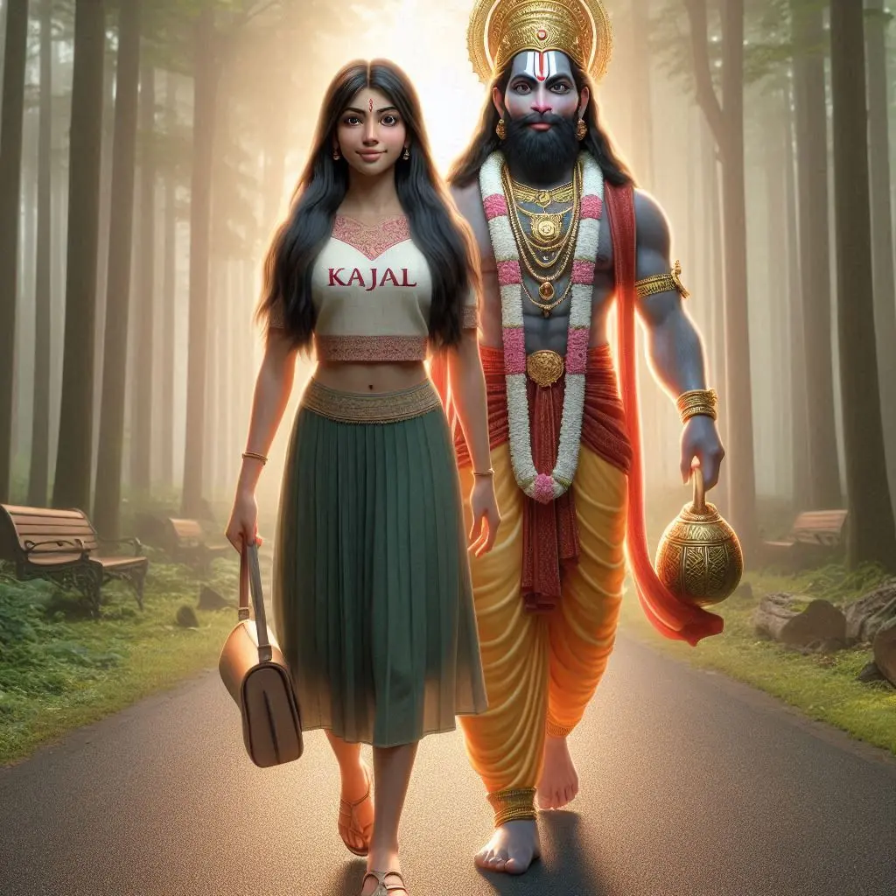
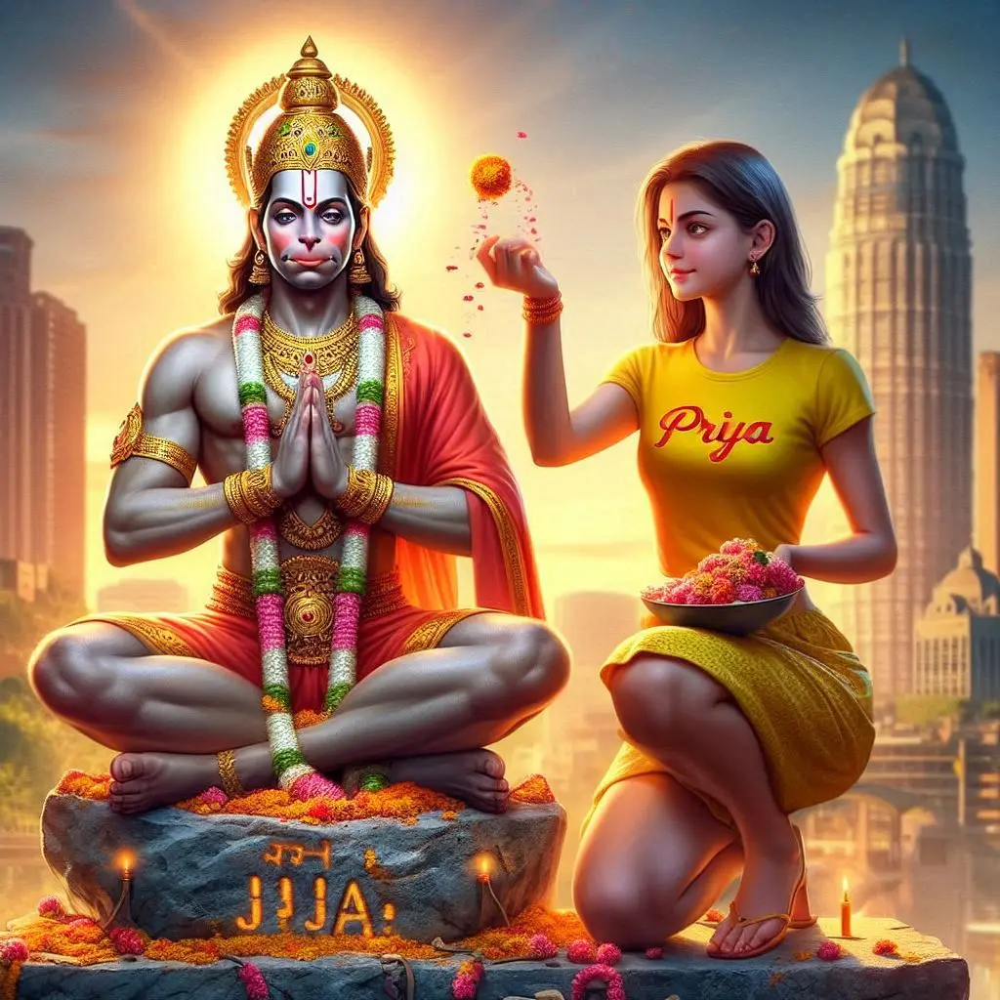

How are you friends, I found out that after a few days new prompts have appeared. So in today’s post I will give you some photo editing prompts to create a photo with Hanuman ji.
Friends, this time I have given your prompts which are not looking for Bing Image Creator, this is something new I have tried.
Friends, this time I have given you prompts of Leonardo’s tool. However these prompts will also work in Bing Image Creator. But I have made it after testing it with Leonardo.
Want more awesome prompts?
Join our community and get the latest viral prompts daily.
Follow on Instagram
? AI PROMPT
"A realistic 22-year-old Indian boy with medium skin tone and short black hair walking beside a majestic and divine Hanuman Ji. The boy is dressed in a simple T-shirt with 'Suraj' written on it. Hanuman Ji is depicted as a towering, radiant figure, walking gracefully with his gada (mace) in hand. The setting is a serene forest path with golden sunlight filtering through the trees, symbolizing divine guidance."
? AI PROMPT
"An Indian boy, aged 22, standing humbly with his head slightly bowed, receiving blessings from a radiant Hanuman Ji. The boy is wearing a T-shirt with 'Suraj' clearly written on it. Hanuman Ji, glowing with divine energy, places his hand gently on the boy’s head. The background features a celestial temple with glowing diyas and sacred ornaments, creating a spiritual ambiance."
? AI PROMPT
"A touching and emotional scene of a 22-year-old Indian boy hugging a larger-than-life, divine Hanuman Ji. The boy, wearing a T-shirt with 'Suraj' written on it, has a look of deep peace and gratitude. Hanuman Ji is depicted as compassionate and protective, his arms enveloping the boy in a warm embrace. The setting is a heavenly cloudscape with soft golden light shining all around."

? AI PROMPT
"A realistic depiction of a 21-year-old Indian girl named Kajal, walking gracefully beside a divine and majestic Hanuman Ji. Kajal has medium skin tone, long black hair, and is dressed in a traditional Indian outfit with 'Kajal' written on her blouse. Hanuman Ji, depicted with glowing divine energy, walks beside her, holding his gada (mace). The background is a serene forest path with soft sunlight streaming through the trees, symbolizing spiritual guidance."
? AI PROMPT
"A touching moment of a 21-year-old Indian girl named Kajal hugging a compassionate Hanuman Ji. She is dressed in plain pastel-colored traditional attire with 'Kajal' written visibly across her kurta. Hanuman Ji wraps her in a warm, protective embrace, radiating divine energy. The background features a serene sky with soft golden light, symbolizing divine love and protection."

? AI PROMPT
Create a Realistic Picture of LORD HANUMAN is depicted in meditation. Sitting on a Stone. A Realistic 20 year old girl with yallow Tshirt sprinkles flowers to HANUMAN and performs pooja. “Priya” is written in the Girl Tshirt. The Background features “Jay Hanuman” in back wall Light. Background City. HD.